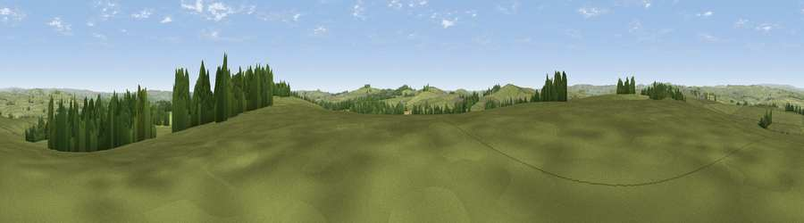

Viewpoint near Parsley Hay
#23041 in England · top 35% of its area beats it · near Parsley HayThe view, rendered

A 360° render of this exact spot computed from the terrain model, tree cover and land cover — summer colours, afternoon light, calibrated against photographs of famous viewpoints. Real trees, hedges and buildings will differ in detail.
The panorama
Grey silhouette: terrain skyline in each direction (720 bearings, Earth curvature and refraction included). Dashed green: skyline with trees (+15 m) and buildings (+8 m) as obstacles. Blue strip: how far the ground is visible on each bearing.
Where the view opens
Wedge length = distance to the farthest visible ground on that bearing (vegetation-aware). Rings at 10, 25 and 50 km.
What fills the view
89% grassland · 9% woodland · 1% cropland ·
Angular shares of the visible panorama (visual magnitude), not map area. Landscape diversity 0.17 (0–1 Shannon).
Key numbers
More beautiful places nearby
The staircase of upgrades: each row has a higher view potential than everything closer. Driving times are estimates from straight-line distance, calibrated against real road routing — check an actual route before setting out.
| Place | Direction | Drive | Score |
|---|---|---|---|
| Lean Low | SW · 2 km | ~5 min | 55.9 |
| Viewpoint near Heathcote | SSW · 3 km | ~7 min | 57.2 |
| Viewpoint near Biggin | SSE · 4 km | ~9 min | 61.5 |
| Viewpoint near Biggin | SSW · 6 km | ~12 min | 65.6 |
| Viewpoint near Earl Sterndale | WNW · 8 km | ~16 min | 66.3 |
| Tissington Hill | S · 11 km | ~21 min | 75.5 |
| Viewpoint near Mow Cop | W · 31 km | ~48 min | 78.9 |
| Viewpoint near Mow Cop | WSW · 31 km | ~48 min | 80.2 |
53.16770, -1.75801 · source: screening · position refined by local search. Computed location — check access rights before visiting.